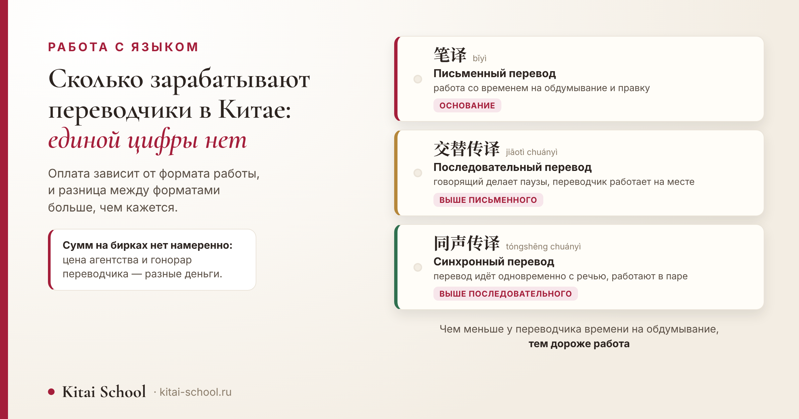
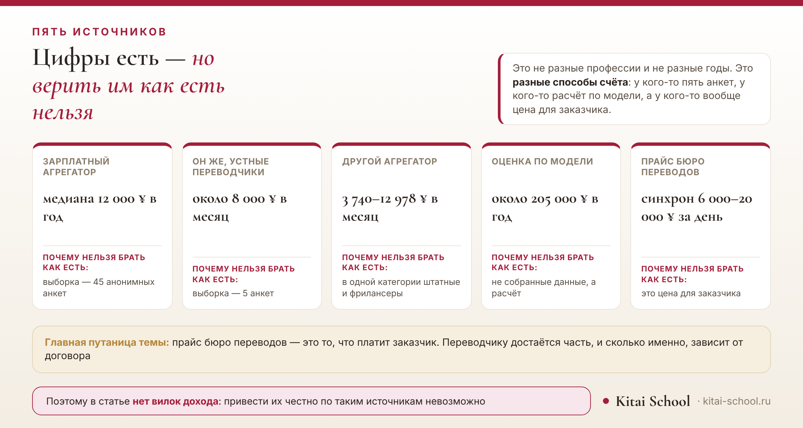

Работа с языком
Сколько зарабатывают переводчики в Китае: от чего зависит оплата и почему единой цифры нет


Я искала ответ на этот вопрос так же, как ищете вы, — и нашла шесть источников, которые противоречат друг другу в разы. Поэтому честный разбор здесь начинается не с цифры, а с объяснения, почему цифры не сходятся. А дальше — то, что действительно можно сказать: из чего складывается оплата, чем отличаются форматы работы и как прикинуть свою ставку, если переводить предстоит вам.
Единой цифры нет. Источники расходятся в разы, потому что считают разное: кто-то зарплату штатного, кто-то доход фрилансера, а кто-то цену бюро переводов для заказчика — это не гонорар переводчика. Устный перевод оплачивается выше письменного, синхронный — выше последовательного. Отдельных данных по русско-китайской паре в открытых источниках нет.
Короткий ответ: единой цифры нет
Начну с того, что обычно говорят в конце.
Назвать среднюю зарплату переводчика в Китае я не могу, и не потому, что плохо искала. Открытые источники дают настолько разные числа, что усреднять их бессмысленно: это было бы не среднее, а выдумка.
Насколько разные — видно из простого сравнения. Один источник даёт медиану около 12 000 юаней в год, другой — около 205 000 юаней в год же. Разница в семнадцать раз, и оба числа опубликованы как «средние по Китаю».
Это не значит, что говорить не о чем. Разброс сам по себе содержателен: у него есть причины, и, разобрав их, вы будете понимать рынок лучше, чем от любой одной цифры.
Про общие зарплаты по стране у нас есть отдельный разбор: там три официальных показателя и объяснение, чем они отличаются. Но к отдельной профессии те цифры отношения не имеют — средняя по стране ничего не говорит о конкретном занятии.
Цена агентства и гонорар переводчика
Вот главное различие темы, без которого всё остальное рассыпается.
Чтобы дальше читать любые цифры правильно, нужно развести две вещи, которые в статьях о заработке почти всегда свалены в одну.
Прайс бюро переводов — это то, что платит заказчик. В эту сумму входит не только работа переводчика: поиск исполнителя, проверка качества, оборудование для синхрона, гарантии перед клиентом и собственная прибыль бюро.
Гонорар переводчика — часть этой суммы, и какая именно, зависит от договора. Назвать долю я не берусь: публичных данных по ней нет, а догадки тут неуместны.
Отсюда и половина путаницы в сети. Человек видит в прайсе «синхрон от шести тысяч юаней за день» и считает, что столько получает переводчик. Сравнивать прайс бюро с зарплатой штатного сотрудника — всё равно что сравнивать цену в кафе с зарплатой повара.
Практический вывод для тех, кто собирается работать: всегда уточняйте, о какой сумме речь — о том, что платит заказчик, или о том, что получите вы.
Три формата: письменный, последовательный, синхрон
Второе, что определяет оплату, — формат работы. Их три, и разница между ними больше, чем кажется со стороны.
| Формат | Чтение | Название | Что меняется | По оплате |
|---|---|---|---|---|
| 笔译 | bǐyì | Письменный перевод | есть время на обдумывание, проверку и правку | точка отсчёта |
| 交替传译 | jiāotì chuányì | Последовательный перевод | говорящий делает паузы, переводчик работает при людях и без черновика | выше письменного |
| 同声传译 | tóngshēng chuányì | Синхронный перевод | перевод идёт одновременно с речью, работают обычно в паре | выше последовательного |
Таблица выше описывает сами форматы, а картинка ниже — то, что происходит с цифрами об их оплате, когда эти цифры попадают в открытые источники.

Разница в оплате идёт не от престижа, а от условий работы. У письменного переводчика есть время: можно проверить термин, переписать фразу, вернуться к началу. У последовательного этого времени нет — он работает при людях и с одной попытки.
У синхрониста нет даже паузы. Перевод идёт одновременно с речью, и восстановить пропущенное уже нельзя. Поэтому синхронисты работают в паре и меняются каждые двадцать-тридцать минут: дольше внимание не держится.
Отсюда и устойчивый порядок: письменный перевод дешевле устного, последовательный дешевле синхронного. Это соотношение держится и в прайсах бюро, и в разговорах о гонорарах.
Почему цифры в сети расходятся в разы
Теперь разберём источники по одному — и станет видно, что ни один из них не врёт.
| Источник | Что говорит | Почему нельзя брать как есть |
|---|---|---|
| Зарплатный агрегатор, письменные переводчики | медиана около 12 000 ¥ в год | выборка — 45 анонимных анкет, и сама цифра противоречит общей статистике по стране |
| Он же, устные переводчики | около 8 000 ¥ в месяц | выборка — 5 анкет |
| Другой агрегатор, категория «перевод» | 3 740–12 978 ¥ в месяц | в одной категории собраны штатные и фрилансеры, письменные и устные |
| Оценка по модели, Шанхай | около 205 000 ¥ в год | это расчёт, а не собранные данные |
| Ещё одна оценка по стране | около 308 900 ¥ в год | включает жильё и транспорт, с базовой зарплатой несопоставимо |
| Прайсы китайских бюро переводов | синхрон 6 000–20 000 ¥ за день на человека | это цена для заказчика, а не гонорар переводчика; прайсы рекламные |
Ученицу позвали переводить на переговорах, и она пришла с вопросом, который кажется простым: сколько просить.
Выяснилось, что считали мы с ней разное. Она держала в голове два часа самой встречи. Заказчик имел в виду день: дорога в другой конец города, ожидание, встреча, потом обед с теми же людьми.
Договорились считать иначе — не «за перевод», а за время, которое в этот день нельзя потратить ни на что другое. Вопрос сразу стал понятным обеим сторонам.
Отдельно проговорили подготовку: материалы заранее, список имён, термины отрасли. Это тоже работа, и она делается до встречи, а не на ней.
С тех пор я уверена, что разброс в чужих цифрах наполовину оттуда же: все считают разное. Кто-то час, кто-то день, кто-то встречу, а кто-то вместе с подготовкой.
К этому добавлю то, что из истории следует напрямую: прежде чем называть сумму, договоритесь о единице счёта. Час, день, встреча, страница, тысяча знаков — пока это не названо, любая цифра повисает в воздухе.
Вернёмся к таблице источников. Причин у разброса три. Первая — та самая путаница между ценой бюро и гонораром переводчика. Вторая — смешение занятости: штатный письменный переводчик и фрилансер-синхронист попадают в одну строку статистики.
Третья — качество самих данных. Выборка из пяти анкет — это не статистика, а модельная оценка — это расчёт, в котором реальные зарплаты могли и не участвовать.
Добавьте сюда суммы, включающие жильё и транспорт, — и разброс в семнадцать раз перестаёт удивлять. Каждая цифра по-своему верна, просто отвечает на свой вопрос.
Что из этого следует для изучающего язык: устная работа требует другого навыка, чем письменная, и готовиться к ней нужно отдельно. Говорить без пауз и понимать беглую речь — это то, что проверяет устный экзамен: устный экзамен HSKK.
Что на самом деле влияет на оплату
Пять вещей, которые сдвигают ставку сильнее всего.
| Что | Как влияет |
|---|---|
| Формат работы | письменный, последовательный, синхрон — разница заметнее всего |
| Тема и терминология | техника, медицина, право требуют подготовки и знания терминов |
| Занятость | штатный переводчик и фрилансер получают деньги по-разному |
| Подготовка к заказу | материалы, список имён и терминов — часть работы, и она тоже время |
| Город и формат встречи | очная работа в крупном городе и удалённая — не одно и то же |
Отдельно про подготовку. Её почти никогда не видно со стороны: заказчик видит встречу, а не вечер накануне, когда переводчик разбирает материалы и выписывает имена участников. Между тем без этого вечера встреча пройдёт заметно хуже.
И про специализацию. Отраслевой перевод требует не только языка: в договоре, в технической документации и в медицинском заключении свой набор понятий, который приходится осваивать отдельно. Как устроен язык договоров, у нас разобрано здесь: юридический китайский язык.
Где в этой картине русский язык
Самое частое уточнение к вопросу — и тут придётся ответить честно.
Отдельных данных по русско-китайской паре в открытых источниках я не нашла. Ни в зарплатных агрегаторах, ни в прайсах, которые приводят ставки по языкам.
Что можно сказать по прайсам китайских бюро: русский в них обычно стоит в одной группе с японским, корейским, немецким, французским и испанским. То есть дороже массовых направлений, но не в самой верхней категории.
Переносить на эту пару цифры, найденные для английского или японского, я не стану: рынок у каждой пары свой, и зависит он от того, сколько в стране заказов именно на этом языке и сколько людей готовы их брать.
Как оценить свою ставку
Раз готовой цифры нет, вот порядок действий вместо неё.
- Определите единицу счёта. Устная работа считается временем — часом, половиной дня, днём. Письменная — объёмом: страницами или тысячами знаков.
- Посчитайте полное время заказа. Дорога, ожидание и подготовка — это тоже рабочее время, даже если заказчик видит только встречу.
- Посмотрите прайсы бюро в своём городе. Они публичны и дают верхнюю границу: больше этой суммы заказчик вряд ли заплатит напрямую.
- Спросите коллег, а не поиск. Два-три человека, работающих с той же парой, дадут более точную картину, чем любой агрегатор.
- Проговорите условия до начала. Что входит в сумму, что считается переработкой, кто платит за дорогу.
И честное предупреждение. Первые заказы почти всегда оплачиваются ниже, чем хочется, и это нормальная часть входа в профессию. Но соглашаться на работу без оговорённых условий не стоит даже в начале.
Чего в статье нет намеренно
- Нет вилок дохода — ни в месяц, ни в год: источники расходятся в разы, и честно привести их нельзя.
- Нет цифр по русско-китайской паре — данных по ней в открытых источниках нет.
- Нет ставок за тысячу знаков с русским: нашлись только по другой языковой паре, переносить их нельзя.
- Нет пересчёта в рубли — курс меняется быстрее, чем обновляется статья.
- Нет обещаний заработка — ни для изучающих язык, ни для выпускников курсов.
- Нет прогнозов по рынку, в том числе про машинный перевод: оснований для них у меня нет.
И главное, ради чего стоило разбирать этот разброс. Вопрос «сколько платят переводчикам» на деле состоит из трёх вопросов: кому платят, за что именно и кто считает. Пока они не разделены, любая цифра будет и верной, и бесполезной одновременно.
Если же вопрос стоит практически — сколько просить за конкретную работу, — то отвечать на него нужно не средними по стране, а своим временем и условиями заказа. Это скучнее, зато работает.
Язык для работы — это другой уровень владения, и ставится он отдельно: онлайн-курсы китайского. Оставить заявку или написать в Telegram.
Частые вопросы (FAQ)
Сколько платят переводчикам в Китае?
Единой цифры нет, и это не отговорка: открытые источники расходятся между собой в разы. Одни дают около 8 000 юаней в месяц, другие — больше 200 000 в год, третьи приводят прайсы бюро переводов, где день синхрона стоит от 6 000 юаней. Проблема в том, что эти числа считают разное: разную занятость, разные форматы работы и в одном случае вообще цену для заказчика, а не доход переводчика.
Сколько стоит день синхронного перевода?
По прайсам китайских бюро переводов — от 6 000 до 20 000 юаней за день на одного переводчика, и обычно к этому добавляется второй переводчик и аренда оборудования. Важно: это цена, которую платит заказчик бюро. Какая часть достанется самому переводчику, зависит от договора.
Чем отличается цена агентства от гонорара переводчика?
Тем, что в цену агентства входит и его собственная работа: поиск исполнителя, проверка качества, оборудование, гарантии перед заказчиком. Переводчик получает часть этой суммы. Если сравнивать прайс бюро с зарплатой штатного переводчика напрямую, разница получится огромной — но сравниваются при этом разные вещи.
Какой формат перевода оплачивается выше?
Устный выше письменного, а синхронный выше последовательного. Причина не в престиже: чем меньше у переводчика времени на обдумывание, тем выше требования и тем быстрее наступает усталость. Синхронисты поэтому работают в паре и меняются каждые двадцать-тридцать минут.
Сколько зарабатывает русско-китайский переводчик?
Отдельных данных по этой паре в открытых источниках я не нашла. Что можно сказать: в прайсах китайских бюро русский язык обычно стоит в одной группе с японским, корейским, немецким, французским и испанским — то есть не относится ни к самым дешёвым, ни к самым дорогим направлениям.
Какой уровень языка нужен, чтобы переводить?
Обещаний тут давать не буду: уровень зависит от формата и темы. Для устной работы ключевой навык — говорить без пауз и понимать беглую речь, и он проверяется отдельно от письменного экзамена. Про устную часть HSKK у нас есть отдельный разбор.
Пусть ваша работа считается честно — и вами, и заказчиком! 加油！
Источники
- Шесть открытых источников — два зарплатных агрегатора, две оценки по модели и прайсы китайских бюро переводов. Все они названы в таблице вместе с тем, почему их цифры нельзя брать как есть.
- Диапазон из прайсов бюро — синхрон 6 000–20 000 юаней за день на переводчика — приведён с прямой пометкой, что это цена для заказчика; прайсы рекламные, и к ним обычно добавляются второй переводчик и оборудование.
- Вилок дохода переводчика в статье нет намеренно: разница между источниками доходит до семнадцатикратной, и усреднять их было бы выдумкой.
- Данных по русско-китайской паре нет — ни в агрегаторах, ни в прайсах с разбивкой по языкам. Сказано прямо.
- Положение русского в средней группе языков приведено по прайсам китайских бюро, где он стоит рядом с японским, корейским, немецким, французским и испанским.
- Порядок форматов по оплате — письменный, последовательный, синхронный — согласуется во всех просмотренных прайсах.
- Работа синхронистов в паре со сменой каждые двадцать-тридцать минут указана в прайсах как условие заказа.
- Обещаний заработка и прогнозов по рынку нет: оснований для них у меня нет.
- Случай с переговорами — из занятий Kitai School; имени, города, компании и сумм не называю.